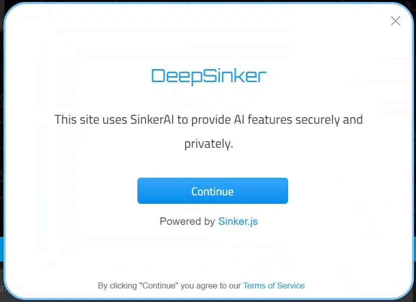

Use sinker.js to unlock all AI capabilities—completely free and without the need for any API keys.
Build your advanced project effortlessly using the powerful language and visual capabilities of artificial intelligence and deep learning. Our platform provides you with a seamless, productive environment designed to make AI development accessible to everyone—no coding skills or technical expertise required!
With sinker.js, you can easily create your own AI-powered agents and advanced projects using models like ChatGPT, Deepseek, and DALL-E. Go beyond the virtual world and build real-time physical systems that use LLM, TTS, and CV technologies to interact with the real world—without requiring advanced coding skills.
To install the package using npm, run the following command in your terminal:
git clone https://github.com/HeySinker/SinkerAI
cd SinkerAi
npm install
npm start
To install the package with docker:
mkdir puter && cd puter && mkdir -p puter/config puter/data && sudo chown -R 1000:1000 puter && docker run --rm -p 4100:4100 -v `pwd`/puter/config:/etc/puter -v `pwd`/puter/data:/var/puter ghcr.io/heyputer/puter
bash:
mkdir -p puter/config puter/data
sudo chown -R 1000:1000 puter
wget https://raw.githubusercontent.com/HeySinker/SinkerAI/main/docker-compose.yml
docker compose up
powershell:
mkdir -p puter
cd puter
New-Item -Path "puter\config" -ItemType Directory -Force
New-Item -Path "puter\data" -ItemType Directory -Force
Invoke-WebRequest -Uri "https://raw.githubusercontent.com/HeySinker/SinkerAI/main/docker-compose.yml" -OutFile "docker-compose.yml"
docker compose up
- **Operating Systems:** Linux, macOS, Windows
- **RAM:** 2GB minimum (4GB recommended)
- **Disk Space:** 1GB free space
- **Node.js:** Version 16+ (Version 22+ recommended)
- **npm:** Latest stable version
Chat with GPT-4o mini:
<html>
<body>
<script src="/SinkerAI/dist/puter.js"></script>
<script>
// Chat with GPT-4o mini
sinker.ai.chat(`What is life?`).then(sinker.print);
</script>
</body>
</html>
Chat with GPT-4o (No Credits required):
<html>
<body>
<script src="/SinkerAI/dist/puter.js"></script>
<script>
sinker.ai.chat(
`What do you see?`,
`https://assets.deepsinker.site/doge.jpeg`)
.then(sinker.print);
</script>
</body>
</html>
Generate an image of a cat:
<html>
<body>
<script src="/SinkerAI/dist/puter.js"></script>
<script>
sinker.ai.txt2img('A picture of a cat.', true).then((image)=>{
document.body.appendChild(image);
});
</script>
</body>
</html>
In this section we will cover the security model of SinkerAI and how it manages apps' access to user data and cloud resources.
If Sinker.js is being used in a website, as opposed to a deeosinker.com app, the user will have to authenticate with deepsinker.com first, or in other words, the user needs to give your website permission before you can use any of the cloud services on their behalf.
Fortunately, sinker.js handles this automatically and the user will be prompted to sign in with their puter account when your code tries to access any cloud services. If the user is already signed in, they will not be prompted to sign in again. You can build your app as if the user is already signed in, and sinker.js will handle the authentication process for you whenever it's needed.
 The user will be automatically prompted to sign in with their Puter account when your code tries to access any cloud services or resources.Once the user has been authenticated, your app will get a few things by default:
Your app will also be able to use the following services by default:
We are always happy to help you with any questions you may have. Don't hesitate to ask!